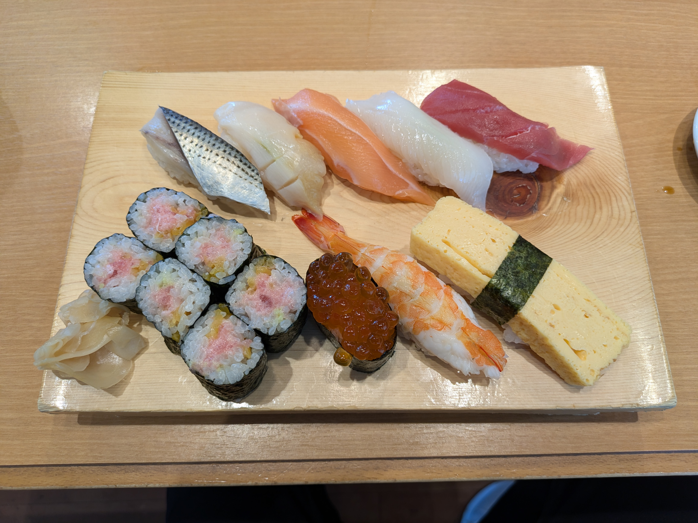
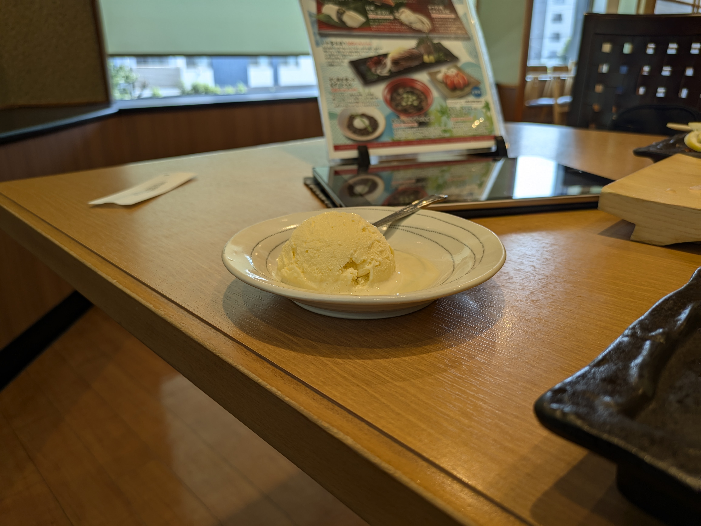
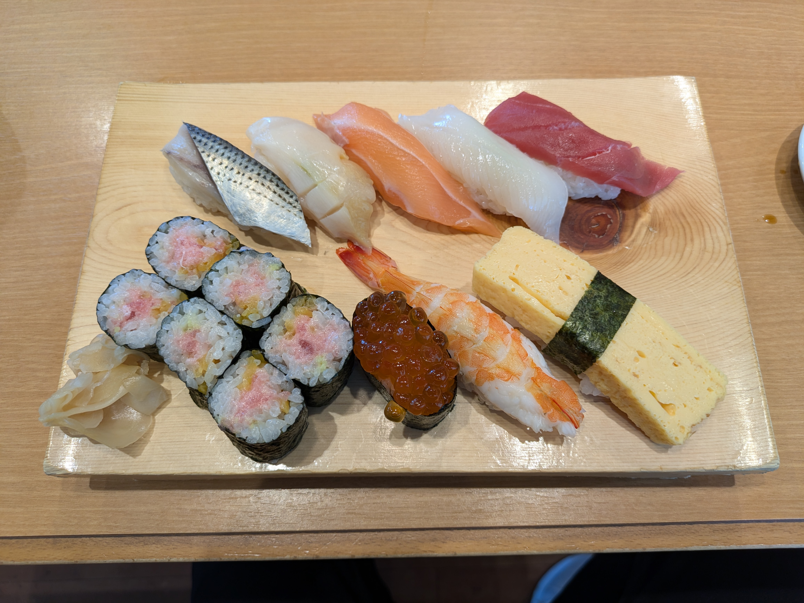
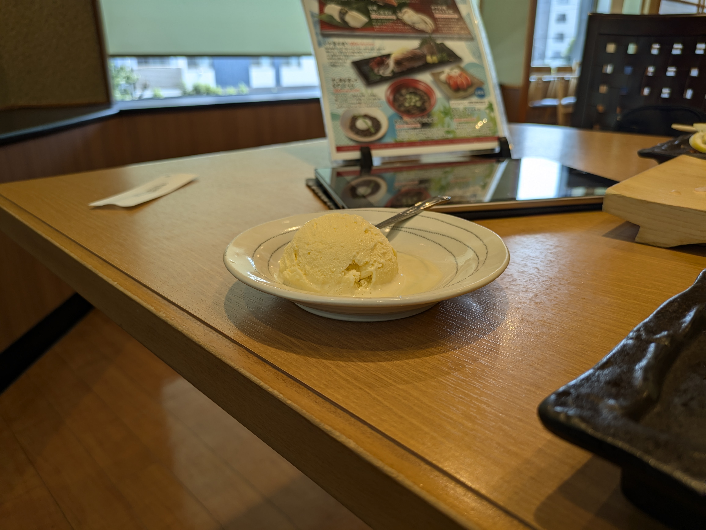
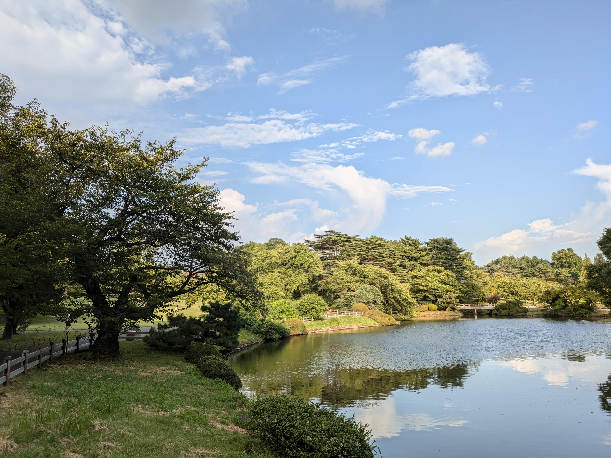
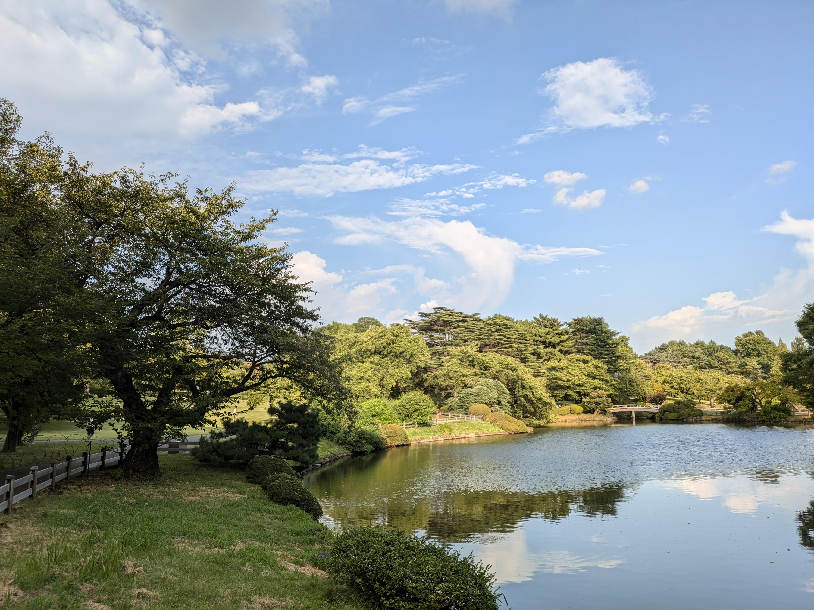
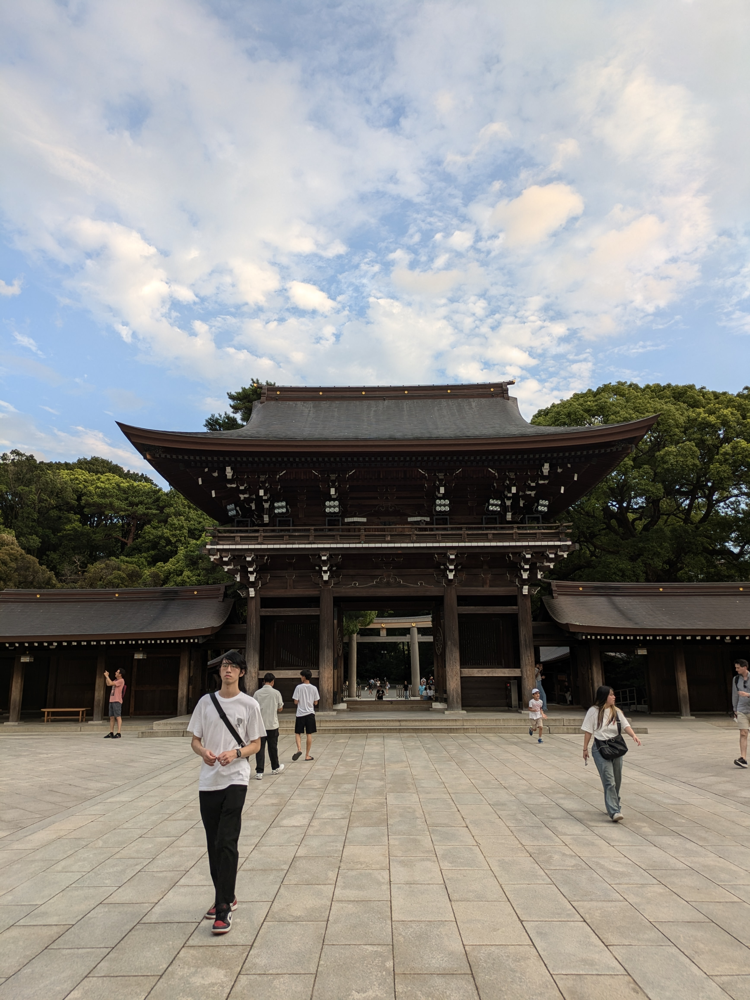
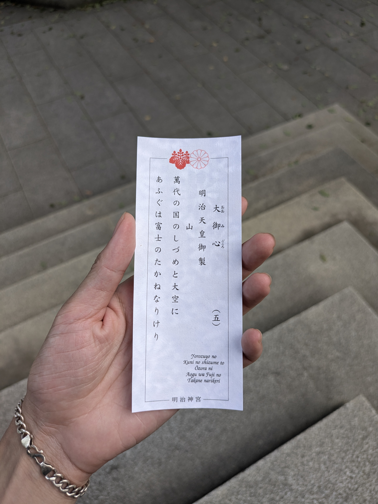
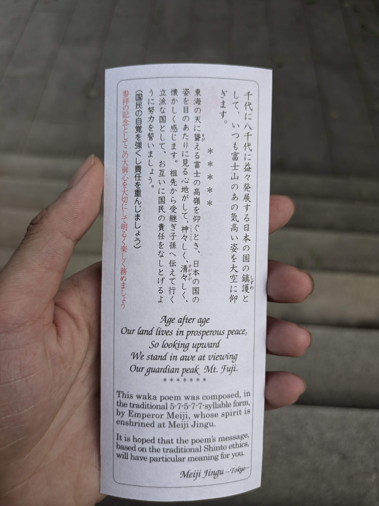

第三日目に千葉へ行きました。東京ディズニーランドには入れなかったので、千葉の魚市場へ行きましたが、閉まっていました。気を取り直して、寿司の「チョウシマル」で昼食を楽しみました。最新のIoT技術で、タッチパネルで注文でき、鮮度の高い寿司と刺身を堪能しました。
食後は新宿御苑を訪れました。緑豊かな公園でリラックスし、熱帯植物園や素敵な木造の建物を楽しみました。その後、明治神宮に行き、壮大な鳥居や静かな境内に感動しました。ここで明治天皇の和歌をもらい、日本の文化を深く感じることができました。
 



チョウシマルの寿司と注文システム。

新宿御苑の緑と熱帯植物。
 



明治神宮の静けさと荘厳さ。


